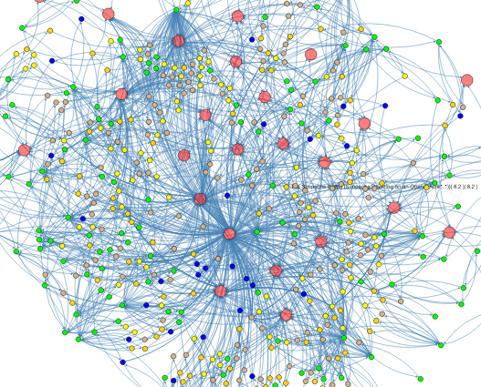

About BRIDGES
BRIDGES(Bridging Real-world Infrastructure Designed to Goal-align, Engage, and Stimulate), an NSF TUES project, is focused on two primary goals,
- providing easy-to-use interfaces to exciting, engaging real-world data (social networks, scientific data, etc), to make it possible for their use in freshmen/sophomore level CS courses,
- make it easy to visualize course assignments in a CS1, CS2, data structures, or algorithm courses
The BRIDGES toolkit provides a set of classes(C++ and Java are supported) that serve as building blocks to the common CS data structures, including lists (arrays, linked lists), tree structures (general trees, binary trees, binary search trees, AVL trees), graphs (adjacency list and adjacency matrix representations) used in freshmen/sophomore level computer science. BRIDGES handles the complex data and web interfaces, thereby letting students focus on the core course materials, while providing a more engaging means to view their output on the web (that can be shared)
BRIDGES Status
We are releasing BRIDGES version 3.0.0 on August 15, 2019.
Version 3.0.0 includes
- additional datasets such as Map through Open Street Map, and Actor-Movie data through Wikidata
- additional data structure such as Large Graphs, and Spatial Trees
- support for simple games
- support for line charts, including timing experiments
- numerous bug fixes and improvements to the base classes.
Looking for New BRIDGES Users
We are currently looking for 3-4 additional external users to adopt BRIDGES in their data structures/algorithms courses and provide feedback. Stipends are available for instructors who would like to partner with our team and collect student feedback as part of the BRIDGES evaluation.
Looking for New BRIDGES Developpers
We are currently looking for students to help with Bridges. We are recruiting both Undergraduate students and PhD student.
The students will need to be enrolled at UNC Charlotte, or at Temple Universities. Stipends are available for students working on Bridges.
Contact Us! for more information.
Acknowledgements
The BRIDGES project is funded by the National Science Foundation through a TUES grant DUE-1245841 and an IUSE grant DUE-1726809.
BRIDGES Examples
- A singly linked list using a reduced version of the IMDB actor/movie dataset.

- Bacon Number and Path Computation using the IMDB actor/movie dataset.
Example illustrates the path between Kevin Bacon and Denzel Washington.

- A binary search tree built using earthquake magnitudes;
data from the USGIS earthquake feed (periodically retrieved and stored on
server, so as to always access the most recent quakes).

- Graph of earthquake data, clustered by
magnitude and colorcoded by quake magnitude.

- Graph of IMDB actor/movie data, clustered by genre and colorcoded by movie ratings. 
- 2D grid structure example that can form the basis for
a variety of image processing operations.